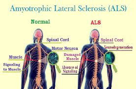

Amyotrophic lateral sclerosis (ALS)

SYMPTOMS:
- Limb onset ALS is when the symptoms start in your legs or arms. For example, you may have hand weakness. Buttoning a shirt or writing might be difficult. Or you may notice leg symptoms. You may have trouble walking or frequently trip.
-
Bulbar onset is when the symptoms start with your speech or swallowing.
CAUSES
Researchers do not know what causes ALS. They believe it’s a combination of factors:
- Genetics: Mutations, or changes, in certain genes may lead to motor neuron breakdown.
-
Environment: Getting exposed to certain toxic substances, viruses or physical trauma may cause ALS.
DIAGNOSIS
Your healthcare provider will do a physical exam and ask you about your medical history. You’ll also need several tests to confirm the diagnosis:
- Blood and urine tests.
-
A neurological examination to test your reflexes and other responses.
-
Electromyogram (EMG) to measure the electrical activity of your nerves and muscles.
-
A nerve conduction study to test your nerves’ ability to send a signal.
-
Magnetic Resonance Imaging (MRI) to look at your brain or spine for areas of damage.
TREATMENT
Treatments include:
- Medications to relieve muscle cramps, extra saliva and other symptoms.
-
Physical therapy to help you stay mobile. It can ease discomfort from stiff muscles, cramps and fluid retention.
-
Nutritional counseling ensures you eat a healthy, balanced diet. A nutritionist can also recommend other food options when swallowing becomes difficult.
-
Speech therapy provides strategies for safer swallowing and communication training help you maintain verbal communication for as long as possible. You may also learn nonverbal communication techniques.
-
Assistive devices, including splints, braces, grab bars and reach devices, help you stay independent. You use these devices to get dressed, eat, use the toilet and bathe.
-
Special equipment such as wheelchairs and electric beds to help you function independently.